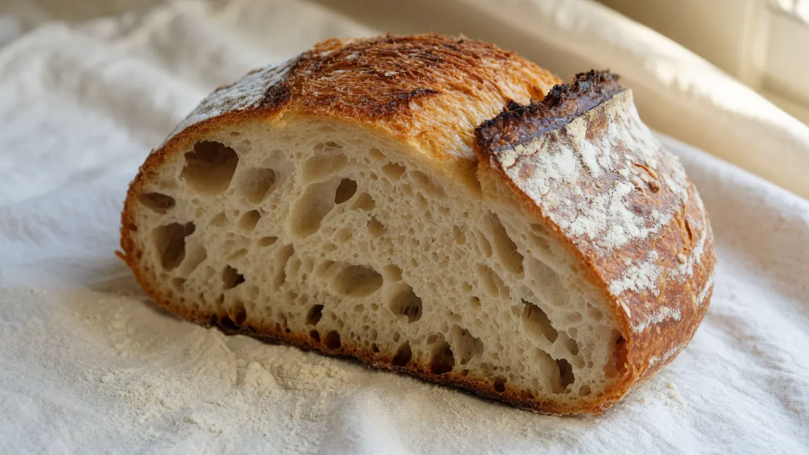
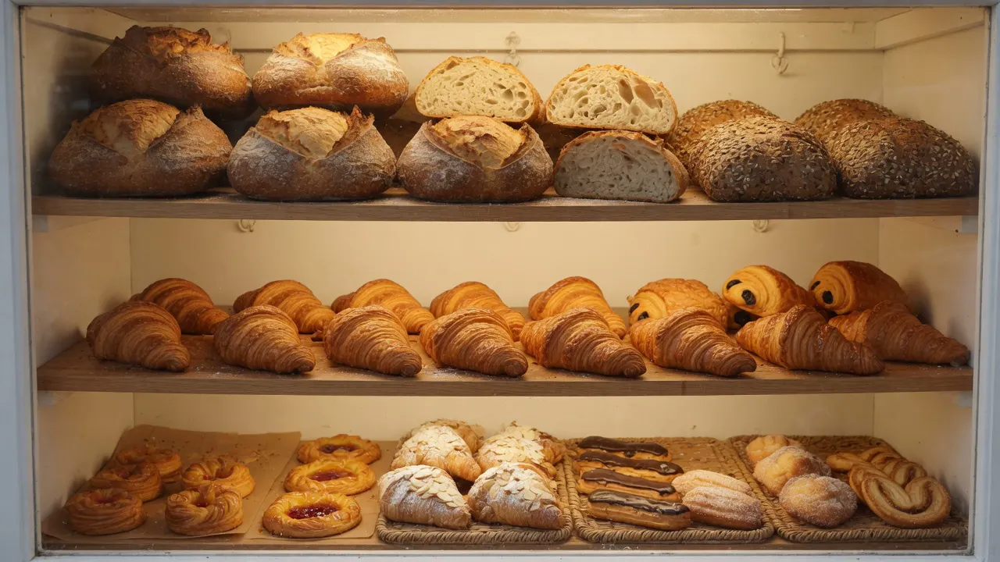

Boulangerie · Pâtisserie · Biscuiterie · Traiteur · Lausanne
Du levain, du temps, et la porte ouverte dès 6 h
Au Boulevard de Grancy 26, à deux pas de la gare, le travail commence avant le jour. Les pâtes fermentent 12 heures ou plus ; puis elles passent entre les mains, le four et la vitrine.

Notre fierté
Le levain prend son temps
Le levain est rafraîchi, la pâte repose, puis la fermentation fait son travail. Ici, elle dure 12 heures ou davantage. Ce temps ne remplace pas le geste : il lui donne une matière à travailler.
Le résultat se voit dans la mie, se sent à la coupe et s’entend parfois quand la croûte refroidit. Pas besoin d’accélérer ce qui a besoin d’une nuit.

Le geste
Des mains là où elles comptent
Pétrir, replier, diviser, façonner, enfourner : il y a des gestes qu’une machine ne décide pas à la place de la personne qui regarde la pâte. L’atelier compte plus de dix artisans. Le rythme est précis ; les mains y ont leur place.

La vitrine
Du matin au dernier passage
La vitrine change avec l’heure et avec les fournées. On y vient pour un pain au levain, une viennoiserie, une pâtisserie, un biscuit ou une proposition traiteur. Une boulangerie n’est pas un décor de miche : c’est ce qui se mange aujourd’hui.
- Pains
- Viennoiseries
- Pâtisserie
- Biscuiterie
- Traiteur

Cent ans dans ce lieu
Un lieu qui a déjà vu passer les fournées
Il y a plus de cent ans de boulangerie à cette adresse. Les frères Moncozet ont eu un coup de foudre pour le lieu et y ont installé Monco’Pain en 2021. L’histoire ne dispense pas de travailler juste aujourd’hui ; elle rappelle seulement que le fournil n’est pas arrivé hier dans le quartier.
Visuel d’illustration — ne représente pas un membre identifiable de l’équipe.

Grancy
Descendre de la gare, prendre le temps d’un détour
Grancy est à 25 mètres du métro et à environ 100 mètres de la gare CFF / du M2 Gare. On y passe en allant travailler, en rentrant, ou parce qu’on habite sous la gare. Le quartier garde ses habitudes de voisinage ; la boulangerie en fait partie.
Accès — Métro Grancy 25 m · Gare CFF / M2 Gare 100 m · Parking Coop, boulevard de Grancy, 1 h gratuite
Réseau
Treize tables et lieux où retrouver le pain
Monco’Pain ne s’arrête pas à Grancy. Treize partenaires lausannois — et un à Pully — servent aussi ce pain. Pour un café, un repas, une visite au musée ou un service collectif, la page des adresses donne le lieu et sa nature.
Venir
Passer la porte
Adresse & accès
- Adresse
- Boulevard de Grancy 26, 1006 Lausanne
- Transports
- Métro Grancy : 25 m. Gare CFF / M2 Gare : 100 m.
- Parking
- Coop, boulevard de Grancy — une heure gratuite.
Horaires habituels
- Lundi à vendredi
- 6 h–19 h
- Samedi
- 6 h–18 h
- Dimanche
- Fermé
Vérifier les jours fériés. Statut affiché selon l’heure Europe/Zurich et les horaires habituels uniquement.